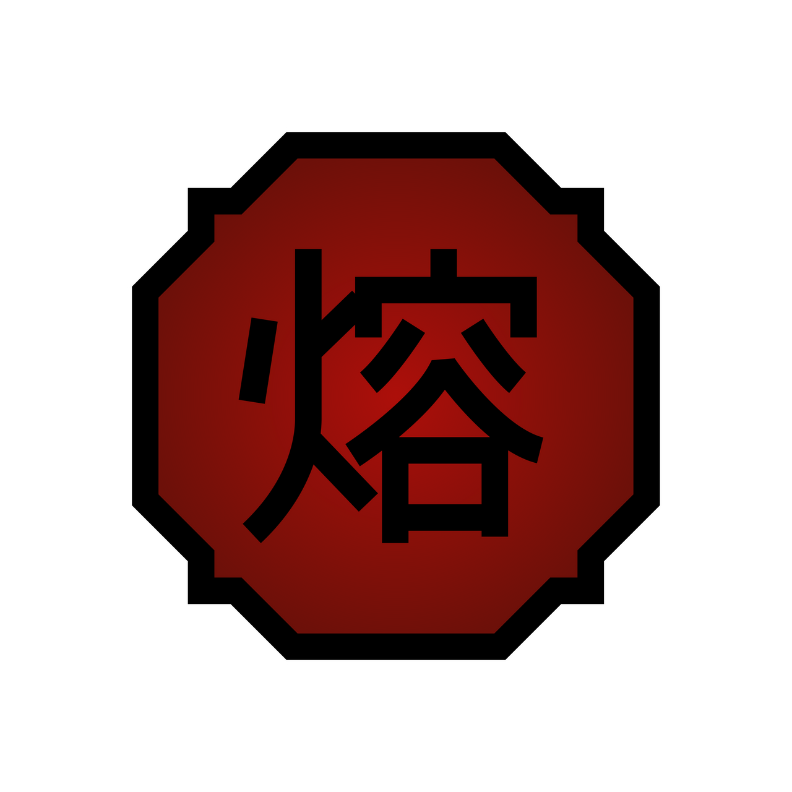
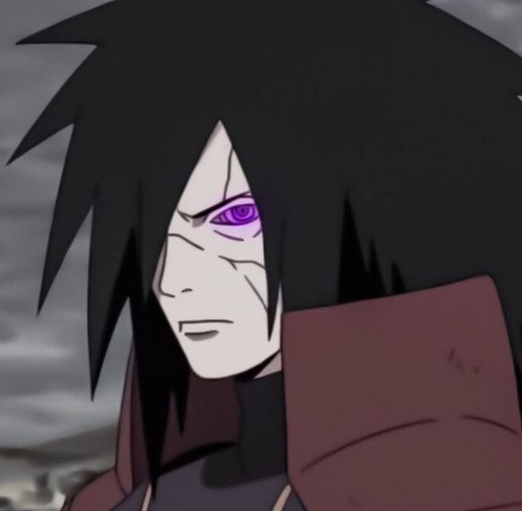

Comment jouer ?
Devine le personnage du jour de "Naruto" et/ou "Boruto". Il change tout les 24h.Il suffit de tapper le nom d'un personnage pour révéler ses propriétés.
A savoir: Soumettre avec un seul personnage proposé, soumet le personnage proposé. S'il y en a plusieurs proposé, la soumission n'est pas prise en compte, à moins de spécifier le nom complet ou de cliquer sur le personnage proposé. Cependant, appuyer sur 'Entrez', soumet le 1er élément proposé.
Vert indique que la propriété correspond.
orange indique que la propriété correspond partiellement.
Rouge indique que la propriété ne correspond pas du tout.
⬆️⬇️Les flèches indiquent si la propriété de la réponse est supérieur ou inférieur à l'essai.
IMPORTANT Après 7 éches, le bouton d'indice devient disponible et permet d'avoir la première lettre du personnage à trouver. Afin de distinger le Yoton , du Yoton  . "Yoton" designera le Yoton et "Yôton" designera le Yoton.
Propriétés
Voici le détail des propriétés:
Genre:
Valeurs possibles: Male, Femelle ou Autre.
Espèce:
Valeurs possibles: Chien, Humain, Alien, Singe, Crapaud, Limace, Requin, Biju, Serpent, Cyborg ou Humain Synthétique.
Nature de Chakra:
Valeurs possibles: Suiton, Katon, Raiton, Futon, Doton, Inton, Yoton, Yôton, Inyoton, Bakuton, Futton, Enton ou Autre
Clan:
Valeurs possibles: Inuzuka, Sarutobi, Otsutsuki, Shimura, Kazekage, Yuki, Huyga, Senju, Uzumaki, Yamanaka, Uchiwa, Hoshigaki, Nara, Aburame, Hozuki, Kamizuru, Akimichi ou Autre
Pouvoir héréditaire:
Valeurs possibles: Byakugan, Mokuton, Sharingan, Mangekyo Sharingan, Ranton, Bakuton, Hyoton, Rinnegan, Tenseigan, Jugo, Ukon et Sakon, Shikotsumyaku, Rinne Sharingan, Mangekyo Sharingan Eternel, Futton, Yôton, Jiton, Enton, Senrigan, Jogan, Daikokuten, Sukunahikona ou Aucun
Affiliation:
Valeurs possibles: Konoha, Alliance Shinobi, Suna, Kiri, Racine, Mont Myoboku, Kumo, Ame, Pays des Vagues, Oto, Akatsuki, Taki, Foret de Shikkotsu, Uzushio, Grotte Ryuchi, Iwa, Kara ou Autre Arc d'apparition:
Les flèches apparissent pour cette case pour indiquer si c'est un arc avant (⬇️) ou un arc après (⬆️).
Valeurs possibles: Introduction, Pays des Vagues, Examen Chunin, Invasion de Konoha, Recherche de Tsunade, Fuite de Sasuke, Chronique de Kakashi, Sauvetage du Kazekage, Hidan et Kakuzu, Poursuite d'Itachi, Invasion de Pain, Somment des 5 Kages, Quatrième Grande Guerre Ninja, Combat contre Madara, Combat contre Kaguya, Début a l'Académie Ninjas, Ao ou Kawaki
Exemple
Considérons que la bonne réponse est Brook
Et que tu soumets Corazon . Alors cela apparait:

Homme
Humain
Paramecia
Dressrosa
Marine
Commandant
Genre: Vert
C'est une correspondance exacte, ils sont tous les deux de sexe masculin.
Espère: Rouge
C'est faux car Brook est autre.
Haki: Vert
C'est vrai, aucun d'entre eux n'a le Haki.
Type de fruit: Vert
C'est vrai, ils ont tous les deux des Paramecia.
Arc d'apparition: Rouge
C'est rouge avec une flèche (⬇️), car Thriller Bark vient avant Dressrosa.
Appartenance: Rouge
Car l'un est pirate l'autre marine.
Grade / Métier: Rouge
Aucune correspondance.

Homme
Autre
Paramecia
Thriller Bark
Pirate
Musicien